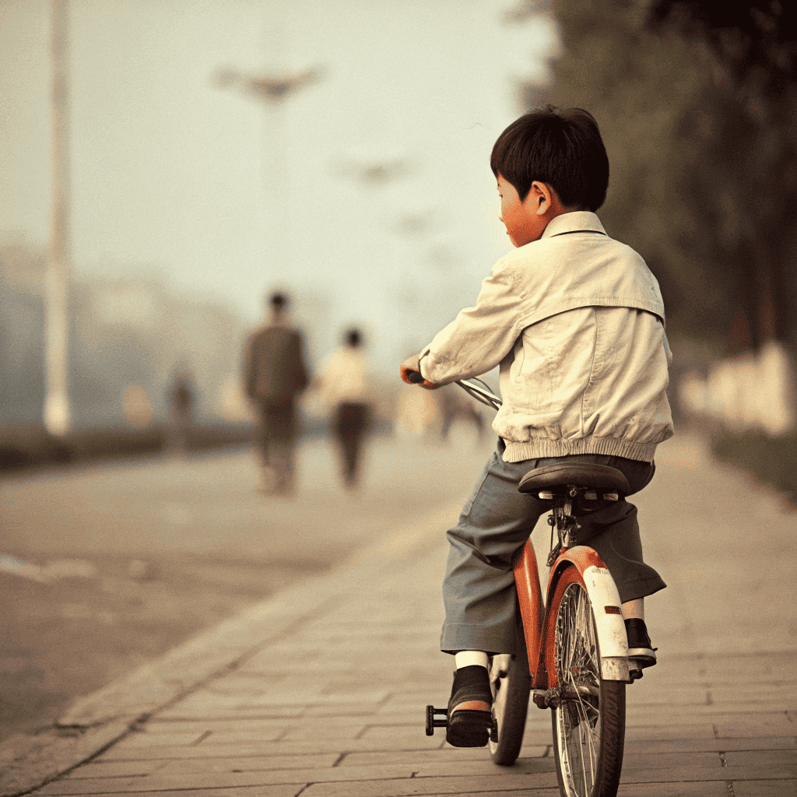
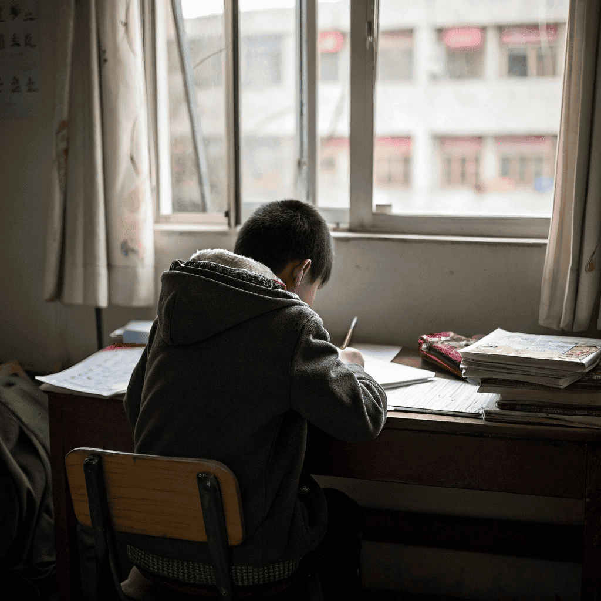

孩子出生那天，医院的产房里弥漫着紧张与期待的气息。当听到婴儿的第一声啼哭时，我的心仿佛被点亮了。那一刻，我知道我的生活将会发生翻天覆地的变化。
从那一刻起，我知道我的生活将会发生翻天覆地的变化。每一个清晨，我都要早起为孩子准备早餐，送他上学，陪他做作业。每当看到他吃得津津有味的样子，我的心中总是充满了满足。
在孩子成长的过程中，我见证了他的每一个进步。第一次走路、第一次说话、第一次上学，都是我心中最珍贵的回忆。记得第一次送他上学时，他紧紧握着我的手，眼中流露出不安与期待，那一幕至今难忘。
有时候，孩子会问我："妈妈，为什么要学习？"我总是耐心地告诉他，学习是为了更好地生活，是为了实现自己的梦想。每当他认真听我讲述时，我的心中总是充满了希望。
"教育是打开未来大门的钥匙。"
随着时间的推移，孩子渐渐长大，开始有了自己的想法和追求。我感到欣慰，也有些不舍。每当看到他努力追逐梦想的样子，我的心中充满了骄傲。记得他参加学校的演讲比赛时，站在台上自信地表达自己的观点，那一刻我为他感到无比自豪。
在这个过程中，我也学会了放手。虽然我希望他能一直在我身边，但我知道，成长就是要学会独立。如今，孩子已经长大成人，走上了自己的道路。我常常回想起那些陪伴他的日子，心中充满了感激。
"每个孩子都是一颗星星，照亮了我们的生活。"
正如我常说的："孩子的成长岁月，是我一生中最美好的时光。"每当我看到他在追逐梦想的路上不断前行，我的心中便充满了骄傲与欣慰。孩子的每一步成长，都是我生命中最珍贵的财富。